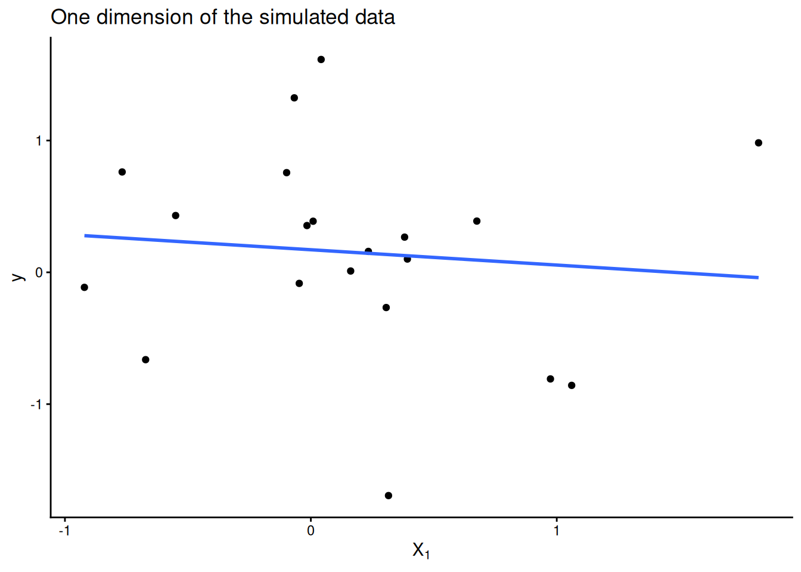

how to use a computer to check your derivative calculations
2017-10-18
Motivation
Suppose you have some loss function ℒ(β) : ℝn → ℝ you want to minimize with respect to some model parameters β. You understand how gradient descent works and you have a correct implementation of ℒ but aren’t sure if you took the gradient correctly or implemented it correctly in code.
Solution
We can compare our implemention of the gradient of ℒ to a finite difference approximation of the gradient. Recall that the gradient of ℒ, ∇ℒ, in a direction d ∈ ℝn at a point x ∈ ℝn is defined as
If we take ϵ to be fixed and small, we can use this formula to approximate the gradient in any direction. By approximating the gradient in each unit direction, we construct an approximation of the gradient of ℒ at a particular point x.
Example: Checking the gradient of linear regression
Suppose that we have n = 20 data points in ℝ2 with responses y ∈ ℝ. Linear regression assumes the responses y are related linearly to the data matrix X via the equation
y = Xβ + ϵ
We want to find an estimate β̂ that minimizes the sum of squared error of the predicted values ŷ = Xβ̂
In the final step above we recognize that the sum of squared residuals can be written as a dot product. Next we’d like to the gradient of this dot product. There’s a beautiful explanation of how to take the gradient of a quadratic form here. The gradient (in matrix notation) is
$$\nabla_\mathcal{L}(\beta) = -\frac{1}{n} (y - X \beta)^T X$$
We can now implement an analytical version of ∇ℒ(β) and compare it to a finite difference approximation. First we simulate and visualize some data:
library(tidyverse)n <-20X <-matrix(rnorm(n *2), ncol =2)y <-rnorm(n)ggplot(NULL, aes(x = X[, 1], y = y)) +geom_point() +geom_smooth(method ="lm", se =FALSE) +labs(title ="One dimension of the simulated data", x =expression(X[1])) +theme_classic()

Next we implement our loss and gradient functions. We assume the loss function is implemented correctly but want to check the analytical_grad implementation.
loss <-function(beta) { resid <- y - X %*% betasum(resid^2) / (2* n)}analytical_grad <-function(beta) { grad <--t(y - X %*% beta) %*% X / nas.vector(grad)}
To perform this check, we need get approximate the gradient in a direction d:
#' @param f function that takes a single vector argument x#' @param x point at which to evaluate derivative of f (vector)#' @param d direction in which to take derivative of f (vector)#' @param eps epsilon to use in the gradient approximationnumerical_directional_grad <-function(f, x, d, eps =1e-8) { (f(x + eps * d) -f(x - eps * d)) / (2* eps)}
And then to approximate the entire gradient, we need to combine directional derivatives in each of the unit directions:
zeros_like <-function(x) {rep(0, length(x))}numerical_grad <-function(f, x, eps =1e-8) { grad <-zeros_like(x)for (dim inseq_along(x)) { unit <-zeros_like(x) unit[dim] <-1 grad[dim] <-numerical_directional_grad(f, x, unit, eps) } grad}relative_error <-function(want, got) { (want - got) / want # assumes want is not zero}
Now we can check the relative error between our analytical implementation of the gradient and the numerical approximation.
b <-c(2, 3) # point in parameter space to check gradient atnum_grad <-numerical_grad(loss, b)ana_grad <-analytical_grad(b)num_grad
[1] 0.05782264 2.09262212
ana_grad
[1] 0.05782263 2.09262212
relative_error(num_grad, ana_grad)
[1] 1.465330e-07 -1.003646e-09
The relative error is small, and we can feel confident that our implementation of the gradient is correct.
This post is based off of Tim Vieira’s fantastic post on how to use numerical gradient checks in practice, but with R code. See also the numDeriv package.